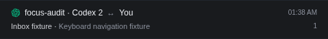
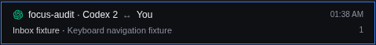
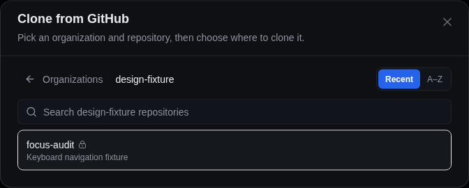
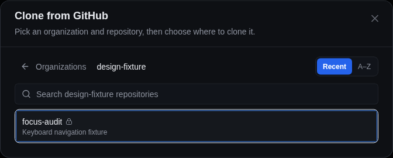
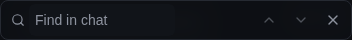
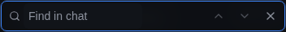
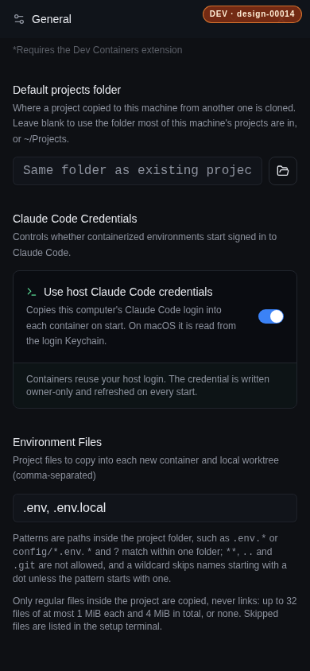
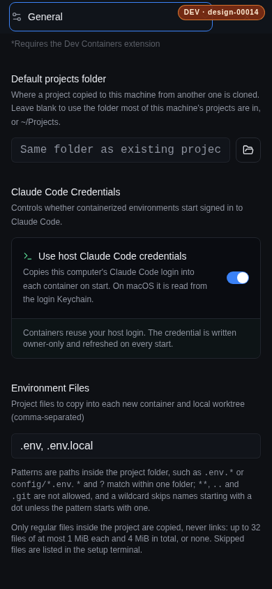

Design tasks / 00014
00014 · Audit controls that remove the outline without a hairline
Problem
The audit covered eighteen files that suppress an outline. Some suppressions are intentional, such as a borderless text area inside a framed composer. Several controls needed a visible focus hairline.
focus-hairline, with
focus-hairline-outset on solid fills) for every focusable control.
Find every instance
grep -rlE --include=*.tsx "outline-none" apps/web/src | grep -v "\.test\." | xargs grep -LE "focus-hairline"Scope
| Where | What |
|---|---|
apps/web/src/components/agent-mail/AgentMailPanel.tsx:263 |
row button |
apps/web/src/components/projects/GitHubRepositoryPicker.tsx:122 |
list row |
apps/web/src/components/chat/AgentChatFind.tsx:342 |
find input in a framed bar |
apps/web/src/components/build-pipeline/PipelineMessageComposer.tsx:390
|
input inside a framed composer |
apps/web/src/components/kanban/FeaturesView.tsx:947 |
input inside a framed composer |
apps/web/src/components/settings/FullscreenSettingsLayout.tsx:200 |
mobile settings section selector |
…and the other files from the grep |
browser/annotations/AnnotationThread, chat/MentionableInput, chat/rich/StaticHtmlArtifactView, chat/TranscriptPromptNavigator, design/DesignCanvasTab, html/HtmlFileTab, layout/KeyboardShortcutsDialog, layout/MobileAppShellLayout, markdown/TiptapMarkdownEditor, projects/CoordinatorActionSearch, sidebar/ProjectSearchBar, terminal/ComposeBar |
Approach
- Tab through each surface and record in Notes whether a focus indicator is visible: ok (the frame shows focus), missing or n/a.
-
Fix missing controls with
focus-hairline(andfocus-hairline-outseton solid fills). -
For inputs inside a framed container, show the hairline on the container with
has-[:focus-visible], not on the inner input.
Required evidence: before and after
Every slot needs a before image (captured first, before editing any code) and an
after image. Use the same profile, fixture data, theme, viewport and zoom for both.
Save PNGs under design/images/00014/ using the exact file names shown. See
How to capture.
Agent mail panel row focused by keyboard desktop 1440×900
Open the mail panel and Tab onto a row.


GitHub repository picker row focused desktop 1440×900
Open the add-project repository picker.


Chat find bar focused desktop 1440×900
Open find in a transcript.


Mobile settings section selector focused narrow 390×844
Open settings at 390px width and Tab to the section selector.


Out of scope
- Terminal canvases and rich-text editors that manage their own caret.
Verification
mise run test:logged -- --name web-typecheck -- bun run --cwd apps/web typecheck
NODE_ENV=test mise run test:logged -- --name focus-audit -- bun --cwd=apps/web test src/components/agent-mail src/components/projects --parallel=2 --only-failures
mise run format:check
mise run lint
React tests in this repo need NODE_ENV=test in build shells. Real-browser
check: use a throwaway dev:test profile named design-00014, never
a production instance.
Acceptance checklist
-
Before images captured on unmodified code for every slot above, and committed
under
design/images/00014/. - After images captured after the change, with the same profile, data, theme, viewport and file names, and committed beside the before images.
- Every image slot on this page shows a picture (the evidence badge reads “8 / 8”).
- I have looked at each pair and written what changed, and anything that did not change that should have, in Notes.
- Hits were classified in Notes, and each decision below is recorded with the option chosen.
-
Type-check and the owning tests pass (commands above);
mise run format:checkandmise run lintpass. - The browser check includes a page reload and, for layout-affecting changes, the narrow viewport.
- DESIGN.md or PRODUCT.md updated if needed: Add a short rule to DESIGN.md if “inputs inside a frame show focus on the frame” is the settled pattern.
- Status set to Done on this page and in the index.
Notes
The baseline command returned 17 files at b2c91abb9.
HtmlFileTab already used a hairline on another control, so its preview host was
reviewed separately as the eighteenth named file.
Hit classification on the baseline
- Missing hairline. Agent mail and GitHub picker rows used a focus tint. The transcript prompt navigator expanded its marker and opened a preview. The design hierarchy resize handle tinted its 1px divider.
-
Missing frame cue. Chat find, keyboard shortcuts search, coordinator action search,
project search, pipeline message composer, feature planning composer
(
FeaturesView), and terminal message composer suppressed the input outline without drawing a focus cue on the surrounding frame. - Missing hairline. The mobile settings section selector suppressed the standard select focus outline.
-
OK. The native composer frame already lightens its neutral border when its
MentionableInputhas focus. - N/A. The annotation heading, static HTML artifact fallback, HTML file preview host, mobile project drawer, and fullscreen settings dialog are focus-management targets outside the normal Tab sequence. The Tiptap editor manages its own caret.
Decisions
- Use the existing inset hairline on edge-to-edge list rows and the prompt navigator to keep it inside the scrolling list or the active marker's hit area. Use the outset hairline on the thin resize handle and the borderless mobile settings selector to keep the line clear of the divider and text.
-
Put one hairline on the frame of a borderless input. Match the input's
:focus-visiblestate specifically so a neighboring button keeps its own cue. A hairline on the input would omit the field's icon and surrounding frame. The native composer retains its established neutral border cue.
Image pairs
Both sets use the headless design-00014 profile, dark theme, 100% zoom, and
device scale 1. Agent mail was seeded in the local fixture, chat history was created with a
loopback model, and the GitHub account and repository responses came from fixed browser
fixtures.
- Agent mail row. The focused row gains a blue inset hairline in place of its subtle background tint.
- GitHub repository row. The focused repository gains a blue line inside the list's existing border, replacing its focus tint.
- Chat find. Opening Find from the keyboard draws a blue line around the full bar, including its icon and match controls.
-
Mobile settings. The section selector
gains an outset hairline. This is the control identified by the scope's source reference.
The PNG filenames retain the specified
settings-searchsuffix.